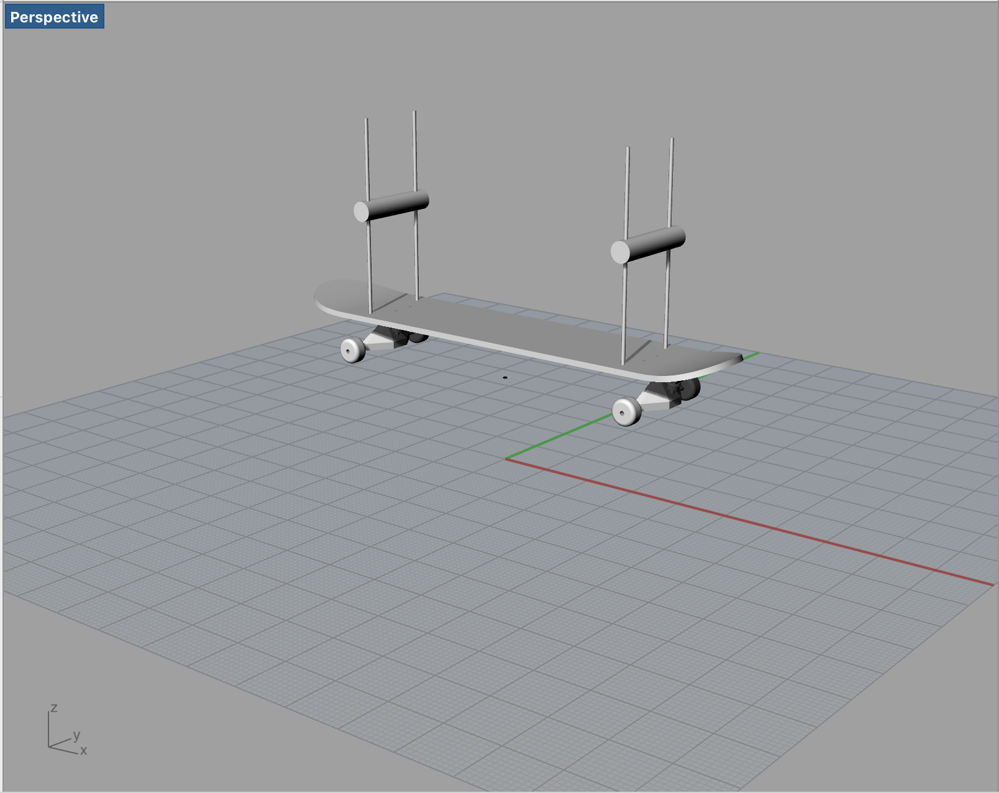
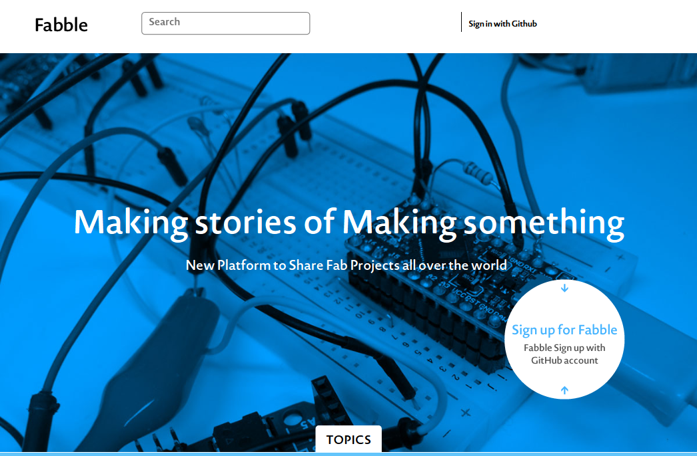
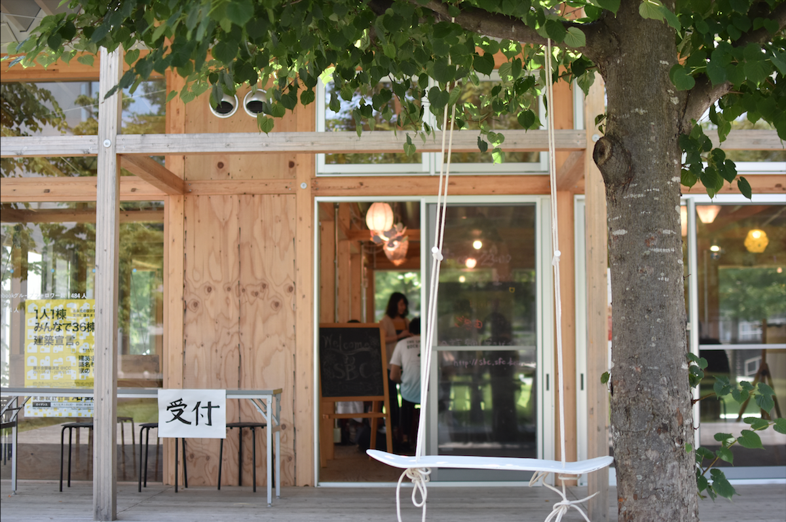
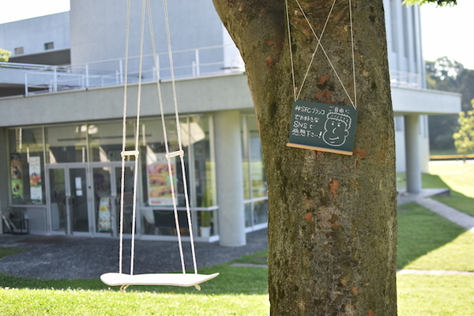

プロダクト名 : Upcycling Skateboard
制作過程まとめリンク : fabble.cc/bighappy
制作期間 : 1ヶ月半
制作構成人数 : 個人制作
「古びたものをアップサイクリングする［新しい命を吹き込もう］」という自由制作課題で制作したものです。 今回は、ボロボロになって滑れなくなってしまった"スケートボード"を"ブランコ"にアップサイクリングしました。
スケートボードの"遊具"としての意味合いは残して、別の命を吹き込むという着想からブランコにアップサイクリングしました。

完成モデリングイメージ
制作過程や制作にあたっての失敗やメモをまとめることで、制作過程で過去を振り返り、新たなプロトタイプの発想が生まれるようにしました。
失敗例や制作の過程を大切にするプロトタイプ思考を大切にして制作しました。
その過程をfabbleというサービスを用いて、まとめています。
fabble.cc/bighappy
❶スケートボードの全部品分解作業 →
❷全部品採寸、デジタルデータ化
❸全部品モデリング →
❹アタッチメントデザイン、モデリング →
❺最後の仕上げ、塗装

fabble.cc
『モデリング』 → Rhinoceros
『寸法採寸』 → Adobe Illustrator
『映像制作』 → Adobe Premire
 完成写真1  完成写真2